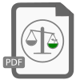

Akuntansi Ekologis
Tractatus Ayyew
Laporan Regen Tahunan
Lampiran
DAMPAK ekologis dari pencetakan, penerbitan, dan pembacaan
Tractatus Ayyew
dilacak, dicatat, dan diungkapkan.
Unduh Laporan Regen tahunan kami di sini:

Penulisan & Penerbitan Tractatus Ayyew
Laporan Regen 2021-2022
| PDF | 554kb | Diterbitkan 12/02/2022